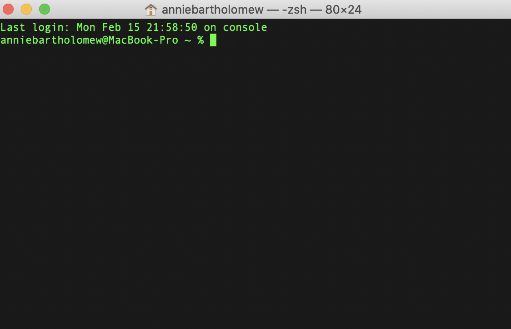
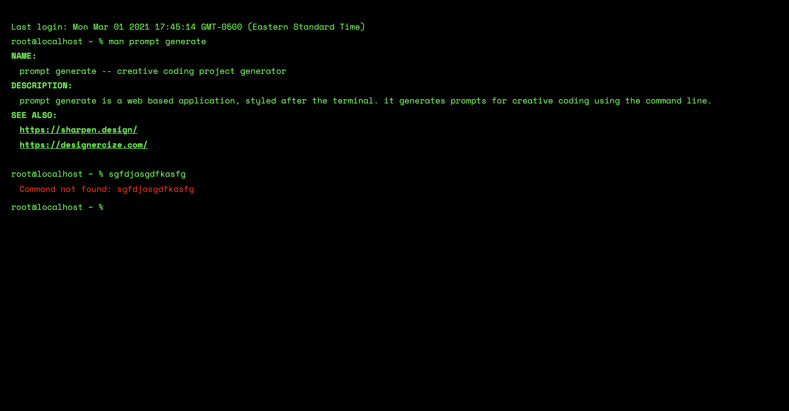

prompt generator
2020
While at Recurse Center, I was a part of the creative coding group that met weekly, as well as communicating asynchonously through Zulip. One week, we decided to do a mini "Hack and tell" and create something in a 20 minute span. I decided to go with a prompt generator - something to give me prompts for creative coding projects so I wouldn't become stuck with choice paralysis for the next quick Hack n Tell project.

Since that this prompt generator's target user was a programmer, I decided to style the appearance and UI/UX after the terminal.
I ended up spending a bit more time than 20 minutes on this, styling the prompt generator after the terminal, where users enter commands to either receive prompts, get the manual or "man" page.
When users first load the site, the man pages are already loaded, to give them the manual. To a non-programmer, the command-line style UI might be intimidiating, but this wasn't a primary concern, given that the target user for the product was a programmer and therefore would feel comfortable using the command line.
After getting feedback from my fellow creative coders, who all said that more commands might be useful, particularly clear to clear the console. I added in the clear command, as well as some error handling for when users input a command that doesn't match any recognized commands.
 The prompt generator displaying an error after a user enterred an unrecognized command.